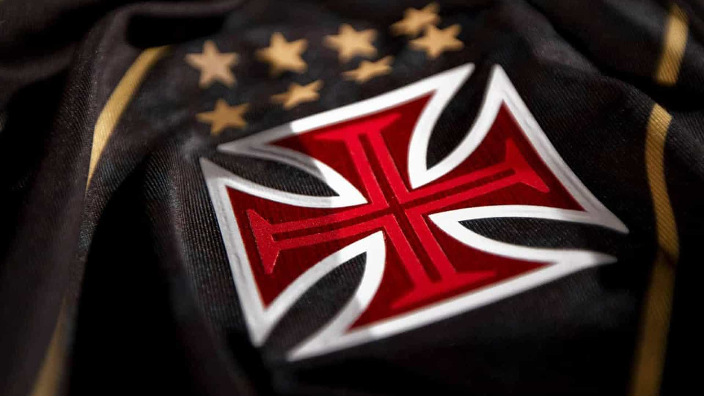

Vasco da Gama - O time pioneiro na luta contra o racismo
História
Como começou
O Vasco da Gama foi fundado em 21 de agosto de 1898 como um clube de remo, que escolheram o nome de batismo para homenagear o navegador português Vasco da Gama que em 20 de maio de 1498 chegou ao porto de Calecute, na Índia, se tornando o primeiro europeu a circundar o continente africano pelo Cabo da Boa Esperança.
A transição para o futebol demorou um pouco a acontecer, mas a ascensão foi rápida. Após iniciar os trabalhos na terceira divisão em 1916 chegou à elite do futebol do Rio de Janeiro em 1923 e conquistou naquele mesmo ano seu primeiro título.
E é na ideia da construção de seu estádio que surge a primeira ligação do clube com as raízes mais populares da cidade do Rio de Janeiro. À época, os clubes de elite da cidade do Rio de Janeiro criaram a Associação Metropolitana de Esportes Athleticos (AMEA) e torceram o nariz para a entrada do Vasco da Gama por conta da ausência de estádio. A resposta do clube foi a construção de São Januário, erguido pelas mãos de seus torcedores.
A história conta, inclusive, que por trás daquele argumento de ausência de estádio estava um preconceito pois o Vasco da Gama havia sido campeão em 1923 com uma equipe formada por trabalhadores humildes, brancos, negros e mulatos, em uma mistura rara em um meio dominado por pensamentos aristocratas. Era a luta do Vasco da Gama contra o racismo.
Noticias

Vasco levará torcedores autistas para amistoso contra o Athletic Club
O Vasco vai aproveitar o amistoso contra o Athletic (MG), que não terá comercialização de ingressos, para levar autistas para acompanhar a partida em um ambiente adaptado, com maior conforto em São Januário. O convite faz parte de uma ação do o Dia Mundial do Autismo. O jogo acontece nesta sexta, às 19h, fechado ao público geral
Vasco firma parceria para criação de figurinhas digitais
Todos os atuais jogadores do elenco profissional terão suas imagens digitalizadas, e torcedores vão acumular pontos de acordo com a performance deles em campo
Vasco lança linha oficial de vinhos em parceria com a 'Soccer and Wine'
Os torcedores do Vasco amantes de vinhos ganharam uma boa notícia nesta segunda-feira. Em parceria com a "Soccer and Wine", o Cruz-Maltino lançou recentemente uma linha de vinhos oficial, em edição limitada. Malbec, Merlot e Pinot Noir são os tipos de vinhos que integram essa coleção especial.
 Vasco da Gama - O time pioneiro na luta contra o racismo
Vasco da Gama - O time pioneiro na luta contra o racismo